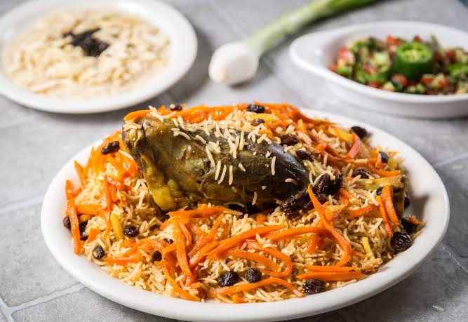

Qabili Palaw or Kabuli Pulao is proudly recognized as the national dish of Afghanistan,
symbolizing hospitality and celebration. This masterpiece of a rice dish features tender, slow-cooked lamb hidden
beneath a mountain of perfectly fluffy, long-grain Basmati rice. The rice is infused with a fragrant, caramelized
broth spiced with cumin, cardamom, and cloves, giving it a rich amber color and deep aroma.
The crowning glory of this dish is its sweet-and-savory garnish, known as Bort. A vibrant topping of julienned
carrots and plump raisins is gently sautéed in oil and sugar, then steamed directly on top of the rice. The final
presentation delivers a magnificent balance of textures and flavors, where the savory meat effortlessly falls apart
alongside sweet bursts of fruit and warm spices.
Heat 1/4 cup of oil in a large, heavy-bottomed pot (degh). Sauté
the sliced onions until deep golden brown. Add the lamb pieces and sear until browned on all sides. Pour in the
water and salt, bring to a boil, then cover and simmer on low heat for 1.5 to 2 hours until the meat is melt-in-your-mouth
tender. Remove the meat and set the rich broth (yakhni) aside.
In a separate pan, melt the butter. Sauté the carrot matchsticks
with 2 tablespoons of sugar for 4-5 minutes until slightly softened but still vibrant. Remove the carrots, then
toss the raisins into the same pan for 1-2 minutes until they plump up. Set both aside.
In a small saucepan, melt 1 tablespoon of sugar over medium-high
heat until it turns a dark, smoky amber liquid. Carefully pour in 1 cup of the reserved hot meat broth (it will sputter)
and stir until the caramel dissolves. Pour this dark liquid back into the main pot of broth along with the cumin, cardamom,
and cloves.
In a separate large pot of boiling salted water, cook the soaked Basmati
rice for 5-7 minutes until it is cooked on the outside but still has a firm bite in the center (al dente). Drain the rice completely.
Pour the spiced, caramelized meat broth over the drained rice and gently mix so the rice
absorbs the color evenly. Place the tender meat pieces in the center or bottom of the pot. Heap the rice over
it in a mound shape. Place the sautéed carrots and raisins on one side of the rice mound.
Wrap the pot lid in a clean kitchen towel to trap the steam. Cover tightly
and cook on high heat for 5 minutes until steam builds, then drop the heat to the absolute lowest setting. Let it
steam (dum) undisturbed for 25 to 30 minutes. To serve, bury the meat on a platter, cover it with the aromatic rice,
and beautifully scatter the sweet carrots and raisins over the top.